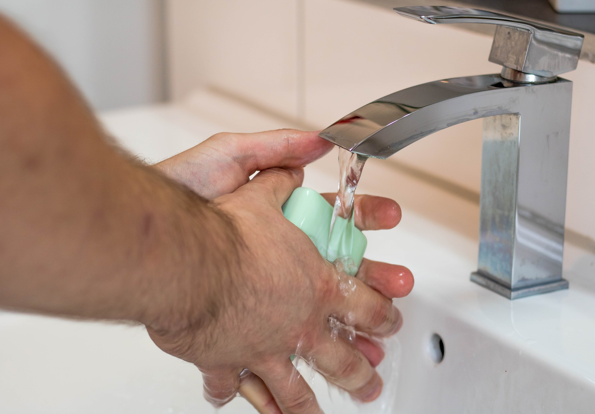
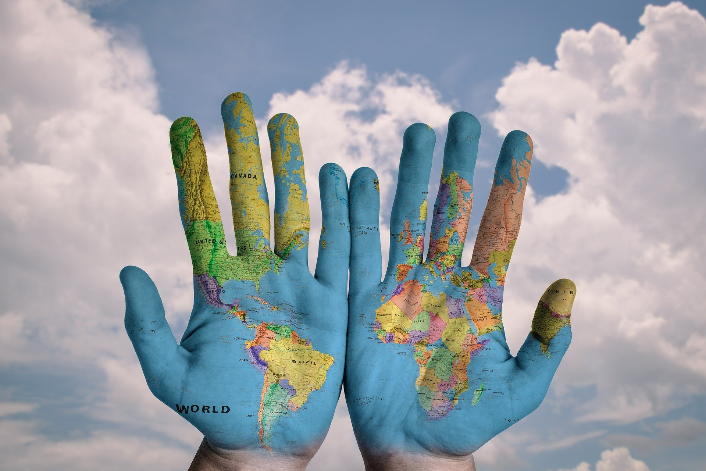

군침이 싹~도는 레시피를 소개합니다!!
[물 만들기]

안녕하세요~ 오늘은 '물'을 만드는 방법을 소개하려고 해요!
이웃님들도 물이 뭔지는 아시죠~?
샤워할 때도 쓰고, 세수할 때도 쓰고
정말 많이 쓰이는 물!

특히 요즘은 코로나19로 인해 더 많이 쓰곤합니다.ㅠㅠ
그나저나 환경 오염이 심해지면서 물을 아끼려는 노력이 전 세계 곳곳에서 보이는데요!
잇님들도 지구를 지키기 위해 더 많은 노력을 기울여야겠죠?
물을 아끼는 것만으로도 지구를 지킬 수 있다니!
정말 대단한 것 같아요.
그럼 지금까지 물 만드는 방법에 대해서 알아봤습니다.
다음에는 더 유익한 정보로 돌아올게요!
출처-내 머릿속